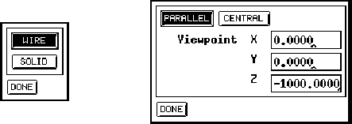

Figure: Model Panel (left) and Project Panel (right)
Here the kind of projection is selected.
selects parallel projection, i.e.\ parallels in the original space remain parallel.

selects central projection, i.e.\ parallels in original original space intersect in the display.With the Viewpoint fields, the position of the viewer can be set. Default is the point (0, 0, -1000) which is on the negative z-axis. When the viewer approaches the origin the network appears more distorted.